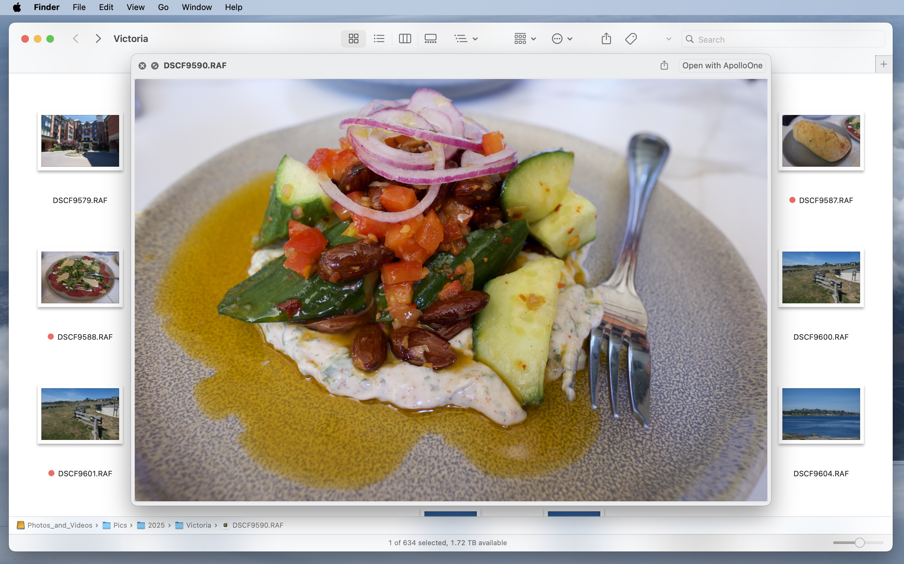
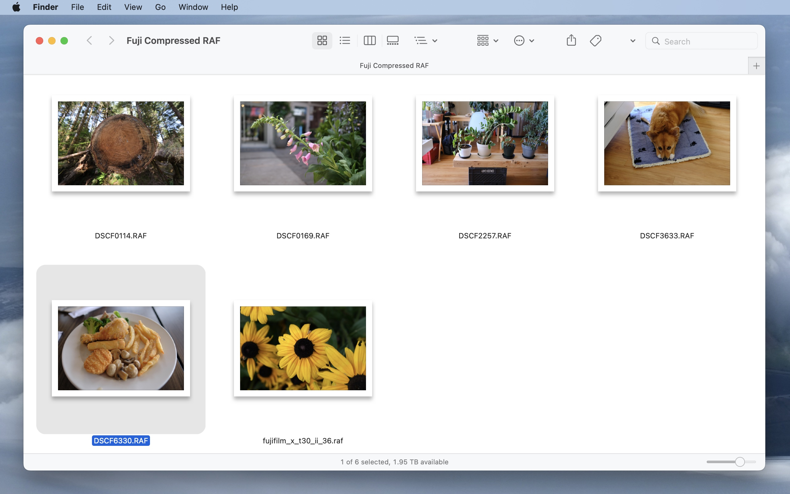
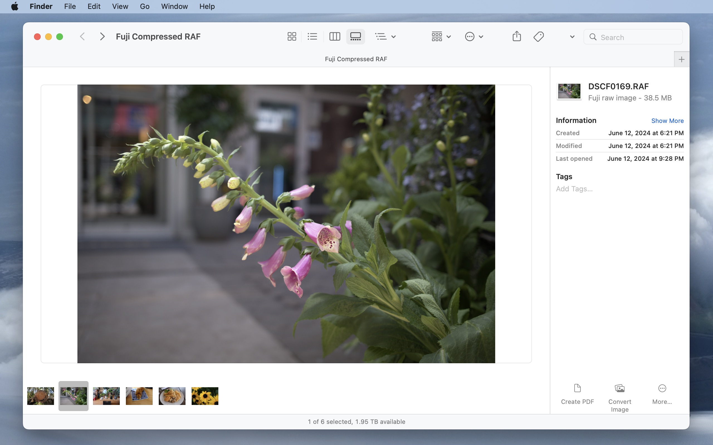
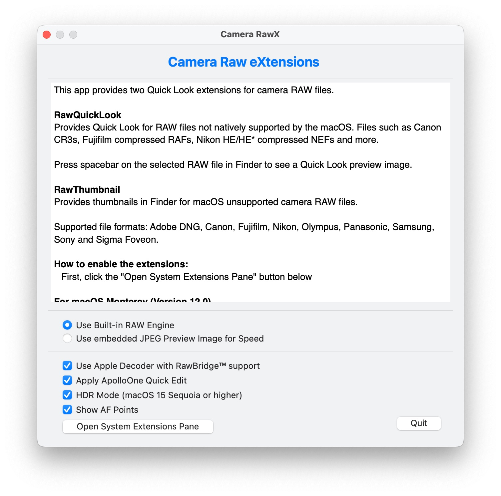

Ready to get Camera RawX?
One-time purchase. No subscription.
Unsupported RAW files, now open instantly with RawBridge™.
Camera RawX brings two macOS extensions — RawThumbnail and RawQuickLook — that let Finder display thumbnails and full-resolution Quick Look previews for camera RAW files macOS doesn't support natively. Powered by the RawBridge™ engine, the same high-performance RAW decoder used in ApolloOne. Supports Canon CR3, Nikon HE/HE* NEF, Fujifilm compressed RAF, Sony, Olympus, Panasonic, Samsung, Sigma Foveon, and Adobe DNG. Choose between the built-in RAW engine or embedded JPEG previews for speed, and optionally apply ApolloOne Quick Edit adjustments.
Press spacebar on any unsupported RAW file in Finder and get an instant full-resolution preview — decoded by RawBridge™, not a tiny embedded thumbnail. Open directly in ApolloOne with one click.

No more generic file icons. Camera RawX generates real thumbnails for every supported RAW format, so you can browse and identify images in Finder's icon view without opening any app.

Finder's gallery view works beautifully with Camera RawX — a large preview with a filmstrip of thumbnails at the bottom for quick navigation, plus file metadata in the sidebar. No extra app needed for a first pass.

One window, two extensions. Choose between the built-in RAW engine or embedded JPEG previews for speed. Enable Apple Decoder with RawBridge™ support and optionally apply ApolloOne Quick Edit adjustments to your previews.

One-time purchase. No subscription.